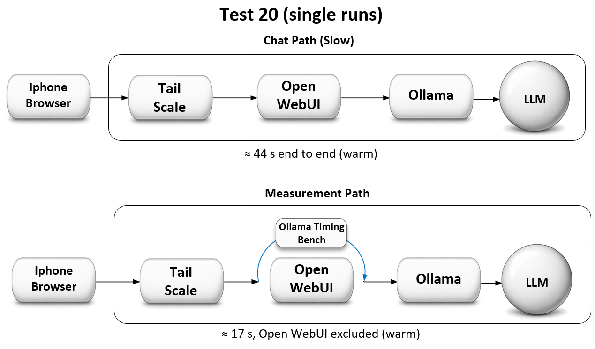
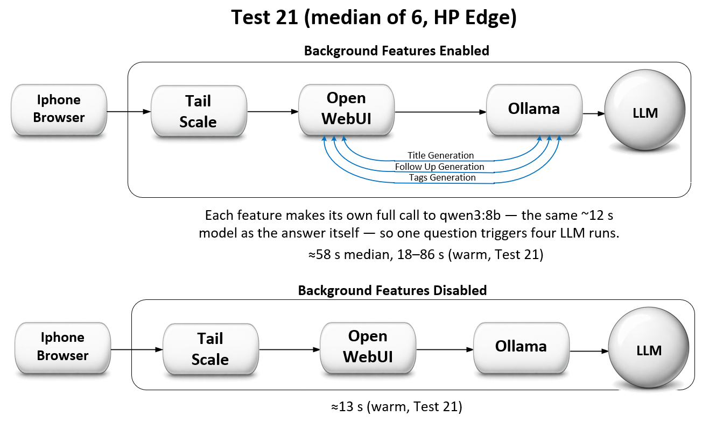

← Part 4: Always-On Server · AI Lab Portal Home
Part 4 fixed whether Lab PC 2 stays reachable after extended idle. This page answers a different complaint that surfaced along the way: even when reachable, a phone query through Open WebUI takes about a minute while the model itself reports only ~30 seconds of thinking. Where does the rest go?
Part 4 = the server stays reachable.
Part 5 = the response stops feeling slow, and the reason why is measured, not guessed.
Earlier drafts of Part 4 blamed the cold/warm gap on Ollama reloading the model from SSD. That theory was never measured before it was written down — this page is the record of measuring it, and of the correction that followed.
To find out where the missing seconds were going, a small diagnostic bench (ollama-timing-bench.html) was built to call Ollama's /api/generate endpoint directly from the iPhone over Tailscale — the same network path as the chat UI, but with Open WebUI removed from the equation entirely.

The gap between the two panels — about 27 seconds — is what pointed the investigation at Open WebUI rather than at Ollama or the network. Ollama's API already reports load_duration, prompt_eval_duration, and eval_duration, but Open WebUI's chat interface never surfaces them, which is exactly why a separate instrument was needed to see them at all.
Three runs of the standard prompt ("Answer in one sentence only: why do cats purr?"), from the iPhone, July 10. Run 1 immediately followed a forced model unload to guarantee a true cold start:
| Run | Wall | Model load | Prompt eval | Generation | Network | Tok/s |
|---|---|---|---|---|---|---|
| 20a — cold | 21.8 s | 4.5 s | 0.2 s | 16.9 s | 0.0 s | 14.5 |
| 20b — warm | 16.6 s | 0.2 s | 0.1 s | 16.3 s | 0.1 s | 14.5 |
| 20c — warm | 17.2 s | 0.2 s | 0.1 s | 16.8 s | 0.1 s | 14.5 |
Cold model load costs 4.5 seconds (Test 20a) — not the 77–90 seconds earlier drafts attributed to it. Generation time is identical cold or warm (16.3–16.9 s, Tests 20a–c), and throughput holds at 14.5 tokens/sec on every run. Network transit over Tailscale from an iPhone on cellular costs roughly a tenth of a second.
Ollama's total work on this prompt is ≈17 s warm, ≈22 s cold (Test 20). The same prompt through Open WebUI ran ≈44 s warm and ≈121 s cold (Part 4, Tests 19/20). The overhead lives in Open WebUI, not in Ollama and not in Tailscale.
Test 20 showed where the missing time wasn't. Test 21 tested the leading suspect: Open WebUI fires its own automatic model calls per exchange — chat title generation, tag generation, and follow-up-question generation — each one a full qwen3:8b inference that never appears in the chat UI's "thought for N seconds" label.

Each of those three features is its own complete LLM call — one user question quietly becomes four separate inference runs on the same single-threaded local model, all queued behind each other. That queuing also explains the "Load failed" timeout seen back in Test 17a: the first real request was waiting behind background calls, not behind a slow disk.
Method: HP desktop, Edge, one browser, standard prompt, a fresh chat for every run, model kept warm throughout. Baseline with Title, Tags, and Follow-Up all switched on, then all three switched off (Admin → Settings → Interface).
| Condition | Thinking | Total (median) | Overhead | Variance |
|---|---|---|---|---|
Features ON (Title + Tags + Follow-Up, all on qwen3:8b) | 11–13 s | ~58 s | 18–86 s | wild |
| Features OFF | ~11 s | ~13 s | ~2 s | gone |
Thinking time stayed rock-steady at ~12 seconds in both conditions — the model itself never varied. All of the overhead, and all of the run-to-run variance, lived in the background calls. Turning them off collapsed the total to the Ollama floor (~13 s, matching Test 20's warm measurement) and removed the swing entirely.
Honest caveat: the first 1–2 runs immediately after saving the setting were still slow (39 s, 52 s) — likely a queued background task draining, or the setting propagating — before the effect fully settled. Later runs were consistently ~13 s.
Confirmed: the tuned chat path runs ≈13 s (median, Test 21), down from ≈58 s (median, Test 21) — roughly a 45-second reduction, and the latency is now predictable instead of swinging between 18 and 86 seconds. The fix adopted was to leave Title, Tags, and Follow-Up switched off, at the cost of losing those three conveniences.
Not yet tested — a deferred Task Model alternative: pointing Open WebUI's Task Model (Admin → Interface → Task Model) at a small model, such as qwen3:0.6b, instead of the full qwen3:8b, could in principle keep automatic titles/tags/follow-ups while cutting their cost. This is an untested idea, not a recommendation — it has never been run and has no measurement behind it. (Test 22, as actually run, became the RAG known-answer baseline — see the Test Log.)
Figure 1 (above, Test 20) uses 44 s / 17 s — single runs, iPhone, Ollama bench vs. chat UI. Figure 2 (above, Test 21) uses 58 s / 13 s — medians of six runs, HP desktop on Edge, chat UI only, comparing features on vs. off. These are two different measurement methods answering two different questions, not a contradiction: Test 20 isolates Ollama's own time; Test 21 isolates the effect of one specific fix. Each figure's caption names its own test — read the numbers against the test that produced them, not against each other.
load_duration all along; the number was one API call away, hidden only because the chat front end never displayed it.